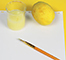
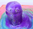

Experimentos para niños
Si está buscando experimentos científicos divertidos para niños, este es el lugar correcto. Esta sección está llena de fascinantes experimentos prácticos que son una excelente manera de disfrutar del mundo de la ciencia.
Descubrirá que se pueden realizar muchos experimentos utilizando ingredientes que se encuentran en la casa (con la supervisión de un adulto, por supuesto).
-
Volcán de espuma
-
Hielo brillante
-
El agua que camina (capilaridad y mezcla de colores)
-
Tinta invisible
-

Arcoiris liquido
-
Pintura esponjosa
-
Reacción del hielo seco en agua
-
Niña científica
Limonada mágica
Consigue hacer cambiar el color de la limonada con una sencilla reacción química que transforma el color violeta en rosa.
Tinta invisible

Juega a los detectives creando mensajes secretos que solo los mejores investigadores podrán resolver. Te orprenderá saber cómo los alimentos permiten crear tinta mágica.
Volcan de espuma

Haz que la espuma del jabón se convierta en lava y salga de su frasco con este experimento que mezclan el vinagre y el bicarbonato.
Hielo brillante
Diversión con este experimento, pensado para los de menor edad. Uniendo la ciencia, la actividad sensorial y la creatividad para hacer que el hielo brille.